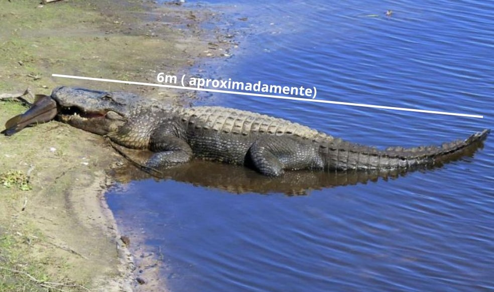

Jacaré Açu
Melanosuchus niger
Detalhes
O Melanosuchus niger, ou Jacaré-Açu, é o maior jacaré do Brasil, com até seis metros de comprimento e uma expectativa de vida de até 100 anos. Ele tem coloração escura com manchas.

Reprodução
Ocorre uma vez por ano em média com uma ninhada de 40 a 50 ovos. Ameaçado de extinção por conta do valor de seu couro e carne.
Habitats
Águas calmas como lagos com conexão a grandes rios de água escura, igarapés, igapós e áreas alagadas.
Peso
360kg a 500kg
Alimentação
É um carnívoro que tende a se alimentar principalmente de insetos, caranguejos, caramujos, peixes e mamíferos.
Os texto inspirados são dos sites
Toda Matéria, Mundo ecologia e Portal Amazônia.